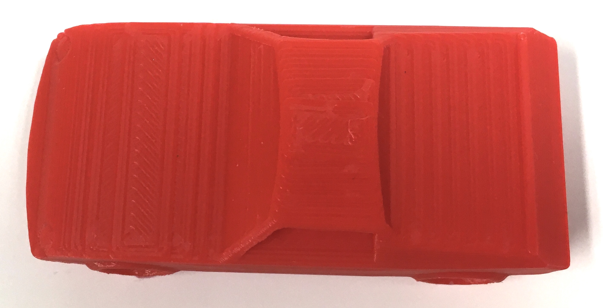

Clea Ramos - E&D I - November 2020
In this project, we recreated scaled, 3D models of toy cars and learned how to use new programs. First, we measured and sketched out the x,y, and z planes of the car. The measurements and drawings were then transferred to OnShape to use as a template to make a 3D shape. The final 3D shape was then printed, analyzed, and documented
First I chose a toy cars to replicate. Next, I took measurements of the x, y, and z planes of the car. On graph paper, I drew the side, front, and top profiles of the car to scale, and labeled the drawings with the x, y, and z measurements accordingly.I drew an asymmetrical view of the car and marked out the x, y, and z axis with the maximum measurements of each plane. Then, I took screenshots of each side profile drawing.
| Side view of toy car | Asymmetrical view of toy car |
|---|
| Engineering Drawing |
|---|

|
||
|---|---|---|
| Screenshot of xz Plane | Screenshot of yz Plane | Screenshot of xy Plane |
Using OnShape, I created a 3D envelope with the same height, width, and height as my car. I then uploaded screenshot of the side(xz plane) profile of my engineering car drawing. I placed the screenshot on the xz plane of my 3D envelope. Then, I repeated this process with the front(yz plane) and top(xy plane) profiles. I made sure to align the corners of all of the drawings in one corner of the 3D envelope to ensure that all of the sketches were aligned with one another.
Using the line tools, I traced over the engineering drawing to create a sketch of the profiles on each plane. Next, I used the extrusion tool to remove the negative spaces from around the outlines to reveal the 3D shape of the car. In order to make match the rounded details of my car's surfaces, I used the fillet tools to round the sharp edges of the model. I also used the extrusion tool to create depth in the windows, wheels, headlights, and rear lights.
| 3D envelope with profile drawings | 3D envelope with sketch of drawings | Removal of Negative space | Final Version with added details |
|---|
Once I finalized the 3D model on OnShape, I created a STL file. Then, I imported the file to Cura to create a GCODE file and adjusted the settings to print. I chose to include support to hold up the bottom of the the car since I printed my car starting from the wheels.
Once the car was printed, I removed the support from the bottom of the car and filed the rough and uneven edges.
 |
 |
|
|---|---|---|
| GCODE File | Printed Car with support | Bottom view of support |
I then created a CAD drawing of my car and included the side, front, and top profiles of the car with measurements of the width, height and length. I also included a few asymmetrical views that highlight the details of the headlights and the rearlights.
Next, I annotated my CAD drawing by noting the differences in measurement and design of my model and the actual toy car. I calculated the margin of error of my design in terms of the x, y, and z measurements of the car, which averaged to a 3.2% error overall. Additionally, I included how I would change my design and approach to reduce the margin of error.
| Annotated CAD |
|---|
One aspect that challenged me throughout this project was precisely documenting the size and shape of my car. For instance, I did not accurately draw the car profiles to scale in my engineering drawing. So, when I uploaded the screenshots of the side profiles to the 3D envelope on OnShape, some of the drawings did not line up with each other or with the dimensions of the envelope; instead, the drawings were smaller. Therefore, the final print of the car is smaller by a few millimeters in length and width.
Another challenge I faced was learning how to use a new program. In this project, I was introduced to OnShape. At first, I had trouble navigating the controls. I found it difficult to manipulate and to move around in a 3D plane. But, after using a multitude of tools and techniques, I became more confident in my new skillset, so I was able to replicate more advanced features like rounded headlights and extruded rear-lights with the use of planes. However, I tried to add small details such as a name on the license plate, but it didn't print on my model. I concluded that the detail was too small to print since the filament was extruded from a 0.6mm nozzle, and the details on the license plate weren't much bigger at 1mm.
|  | ||
|---|---|---|
| Side view | Front view | Top view |
|
Side by Side Asymmetric view of toy car and 3D replica
|
|---|
Source code used for making webpage: https://www.w3schools.com/css/default.asp